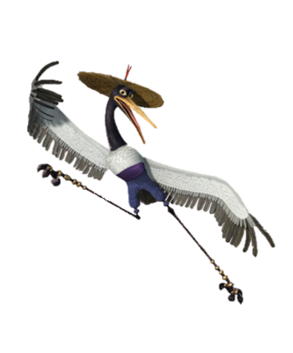

Master Crane

Hey there! I see you have been listening to some stories from
the other Masters, would you like to hear mine? Yes?
Okay, So it all started when one day when Master Tigress came at the
Lee Da Academy where I was worked as a cleaner there. I was
very confused when tigress said Master Shifu was asking for the
cleaner (And even more confused when she wanted me to fight!).
But when she said the Jade Palace, I saw a bright and shiny(get it?)
future, so I decided to go! So after tigress game for me, we went to
get Monkey, Viper, and finally Mantis! And after years of practice,
we became the unstopable Furious Five!
Now I don't know why but people usually compare me as the weakest team
member. That is SO NOT TRUE!
But anyways, I need to go now, have a nice day!